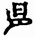

欽定四庫全書總目卷十
國朝夏宗瀾撰宗瀾字起八江陰人由拔貢生薦授國子監助敎是編乃宗瀾恭讀御纂周易折中意有所會即標記之多因集說而作時宗瀾方從楊名時於雲南以修周易折中時李光地爲總裁官而名時爲光地門人故參互以光地榕村易解就正於名時以成此書其體例在講章語錄之間凡問者皆宗瀾語答者皆名時語也
國朝夏宗瀾撰是書惟解上下經不及繫辭以下前列易例舉要一篇讀易指要一篇其指要有曰要明易理須先將伏羲畫卦次序方位文王八卦方位及先後天方圓諸圖反覆記看令其曉然再說卦傳記得極熟然後讀易方有入手處其宗旨不外是矣
國朝程廷祚撰廷祚有大易擇言已著錄是書凡易學要論二卷周易正解十卷易學精義一卷又附錄占法訂誤一卷易通其總名也其要論盡去漢人爻變互體飛伏納甲諸法未免主持稍過然舉宋人河洛先天諸圖及乘承比應諸例掃而空之則實有芟除轇轕之功其正解則經傳之義疏不用今本亦不用古本以彖傳小象散入經文十翼併爲六翼頗嫌變亂而詮釋尚爲簡明其精義統論義理通其說於道學畧如語錄之體其占法訂誤謂畫有奇偶九六而上下進退於初二三四五上之際所謂六爻發揮者易之變惟在於此之卦則所以識別動爻之用而所取仍在本卦故以洪範之說爲占法而以春秋內外傳所載爲附會變亂不與易應然箕子殷人未睹周易太卜掌三易之法則三易異占灼然可証左氏所紀其事或有附會其占法則當代所用卜史通行斷不至實無此法而憑虛自造是則信理黜數至於橋枉過直者矣
國朝程廷祚撰此書蓋其中年所作在大易擇言易通二書之前後多附入二書中然亦時有採取未盡者蓋所見隨年而進故不一一盡執其舊說也
國朝羅登標撰登標字子建寧化人康熙間舉人官松溪縣敎諭是書皆辨易中疑義凡爲論者七十四爲考者五爲解者三十三共一百十一篇多循用前人之說其首卷第一篇論畫前有易不免膚詞卷三中以三百八十四爻割隷八卦於全卦之義反有未融至卷四中以六十四卦之五爻配歷代帝王解一篇亦屬掛一漏百其以恒五爻婦人吉夫子凶擬武后之幽囚太子竊弄神器尤爲悖理夫武后可稱婦人吉乎
國朝汪璲撰璲字文儀號黙庵休寧人其書置象數而專言理其凡例有云今說易之家謂易以道陰陽務以圓妙幽渺籠罩影響如捕風如捉影無當實用故愚以爲學易當就平實切近處用功云云其宗旨可見故隨文詮釋無所穿鑿而亦無所發明卷末雜卦一篇有錄無書疑裝緝者偶脫云
國朝吳映撰映字沐日晉江人其書大旨皆宗朱子本義而折衷於蒙引存疑諸書持論亦頗平實然取材太寡用意太拘尚未能深研精奥也
國朝劉琯撰琯字獻白棗强人先天之圖於周易之上別尊羲易其傳出自陳摶自參同契以外別無授受之確證故邵子之學朱子以爲易外別傳自元以來諸儒互有衍說亦遞相攻擊至國朝黃宗炎胡渭諸人始抉摘根源窮究依託渭書考究尤詳琯未覩黃胡二家之書不知其僞之已破故又因而推衍加以穿鑿如謂人之生虱人止一个而所生之虱个个有對又謂男女雖是二个合來仍是一个故男鰥女寡俗稱半个人其詞皆不雅馴於月令天氣上升地氣下降閉塞成冬及周髀四遊之說攻駁尤甚大抵皆憑臆而談其敘跋皆自命甚高以爲聖賢所未發過矣
國朝劉紹攽撰紹攽三原人是書大旨以程傳爲宗與本義頗有同異於邵子先天之說亦不謂盡然不爲無見惟於漢儒舊訓掊擊過當頗近於傎其議論縱橫亦大抵隨文生義故往往自相矛盾如卷首論玩辭一條駁諸儒之失曰甚有釋傳與彖傳不合釋象與爻不合無以自解則藉口有伏羲之易有周文之易有孔子之易云云至開卷元亨利貞一條又主大通而利正固之說謂王弼泥於穆姜之言以元亨利貞爲四德後多宗之殊不知文王有文王之易孔子有孔子之易彖辭彖傳不相率合者甚多云云是二說者使後人何所從乎
國朝范咸撰咸字貞吉號九池錢塘人雍正癸卯進士官至監察御史其書惟解經文不及十翼大旨以理始於象象始於畫又以萬物始於陰陽象始於日月取繫辭陰陽之義配日月之語而總以陰始於陽爲斷故名原始其說多採輯古義不以白圈黑點依託圖書亦不以禪偈道經空標心性較明以來說易諸家頗爲篤實然其長在盡掃卮言其短亦在好生新意如謂元亨之元爲陽在下至於陰卦亦每稱元義有難通者亦曲伸其說又謂上經皆陽盛之卦下經皆陰盛之卦而上經有剝復下經有中孚大壯理有所格亦必强合其義是又好持己見務勝先儒之過矣
國朝郜煜撰煜字光庭汝州人雍正癸丑進士官至中書科中書其書不釋十翼惟六十四卦每卦撰說一篇詮釋大意其大旨欲以義理矯象數之失以平易救穿鑿之失以切實救支離泛濫之失而矯枉不免過直云
國朝劉斯組撰斯組字斗田新建人雍正甲辰舉人官杞縣知縣是書前有記畧載梓此書時其壻夢二童歌詩曰不不不九六乾坤七四執黃農非古世非今理數瓜分一太極又載著是書時其姪夢閣上有朱題撥易閣三字因以爲名其事頗涉幻杳似乎故神其說又謂撥字有發揮三才之義不知說文撥字在手部篆作隷省作才非从才也其書首二卷皆圖說大抵因舊解而蔓衍之又謂論語中庸皆通於易即陳際泰羣經輔易說之意六經一貫理自相通至於才辨縱橫隨心牽引如解飛龍在天曰此則唐人所謂龍池躍龍龍已飛矣入天門開黃道艮闕亦具爻內讀易方解詩中寫龍德特全是豈詁經之體耶
國朝顧昺撰昺號虛莊南滙人雍正甲辰舉人是編爲其三經解之一皆節錄御纂周易折中內所集諸儒之說參以李光地周易觀彖通論故曰摘抄間附己意亦罕所發明
國朝林贊龍撰贊龍字澤雲侯官人雍正丙午舉人是書以發明大象爲主六十四卦各爲一篇以上下經分二卷而冠以綱領六篇爲一卷一曰發凡二曰象例三曰義理象數四曰卦爻中相錯陰陽相應五曰憂患九德六曰大象有通於四書殿以附解二篇爲一卷一曰作易憂患解二曰雜卦傳解大旨以大象上一句爲天地萬物之象下句爲人事以天象爲人事之則不言吉凶而言理義不言神聖而言君子以明人人可學故所闡發皆切日用其綱領有曰借易明理自夫子已然學以聚之問以辨之寛以居之仁以行之爲乾九二而言也而乾之九二豈有學問寛仁之義乎日月相推而明生焉寒暑相推而歲成焉爲咸九四而言也而咸之九四豈有日月寒暑之義乎是則借象立言之旨矣
國朝饒一辛撰一辛字治人南城人是書成於雍正丙午凡圖說七周易統天旋卦賦一說卦傳論一納音五行論一古今本得失論一於周子太極圖邵子先天圖皆多所攻駁而其所自造之圖亦初無所受至擬歸藏連山等圖以乾北坤南坎東離西艮東北兌西南震東南巽西北爲位尤於古無徵
國朝上官章撰章字闇然乾州人是書成於雍正丁未自稱凡二十六易稿大旨本京房納甲之法而以八宮經綸錯綜爲脈絡一切舊圖皆屏不用頗爲潔淨不支然不用古圖而又重乾巽艮坤四卦十二畫別立爲圖以爲河洛方圓先後天諸說皆足以包括是掃一圖學之障又生一圖學之障也
國朝魏樞撰樞承德人雍正庚戌進士官永平府敎授乾隆元年薦舉博學鴻詞未及試而卒是書用王弼本列朱子本義於前而以己意附於後其凡例謂生長遼東日與東人相問答故敘其原委而集之以示初學名之曰東易問紀其實也其論卦變曰剛柔皆當指卦不當指爻如訟之剛來而得中者坎也隨之剛來而下柔者震下於兌也蠱之剛上而柔下坎在巽上也噬嗑晉睽鼎四卦言柔得中而上行者皆離火也賁柔來而文剛離文乎艮之內也分剛上而文柔艮文乎離之外也无妄之剛自外來者震也大畜之剛上者艮也咸柔上而剛下兌在艮上也恒剛上而柔下巽在震下也柔以時升者巽也是凡言剛者皆陽卦凡言柔者皆陰卦也則以剛來柔來指一爻而言者固未足以盡其義矣云云其論似近理而不盡然其論來知德錯綜曰乾本至健也以錯言則又可以謂之順初爻變巽爲人以錯言則又可以謂之動以綜言則又可以謂之說二爻變離爲明以錯言則又可以謂之陷中爻巽可以謂之入以錯言則又可以謂之動以綜言則又可以謂之說推之三四五上莫不皆然則亦何所不像哉是故初以在下變巽而潛有以爲錯震而躁動者其將何以應之乎二以在田變離而見有以爲錯坎而隱伏者其將何以應之乎則持論固爲明確矣
國朝張敘撰敘字鳳岡太倉人雍正壬子舉人是書用注疏本而以小象總列六爻之後如乾坤二卦例又以大象置彖傳之前考象辭列六爻後是吳仁傑所傳鄭本大象置彖傳前是周燔本而叙乃以爲創獲蓋未知有吳周二本也至圖學傳自邵子其位置皆依說卦周子太極圖初不言八卦此書皆强爲牽合又斥諸儒爻變之說而以左氏所載占法爲周易未成經時卜筮家雜用以測驗則又過於疑古矣
國朝錢偲撰偲號堅瓠老人錢塘人雍正壬子副榜貢生是書以卦分爻配史事故曰緯史夫引事証經鄭氏易註即有之至吳園易解誠齋易傳始大暢厥旨以人事之成敗證易象之吉凶是亦以古爲鑑之意未爲無所發明至此書所引則多不考據如屯六二稱曹操待壽亭侯需上六稱劉備桃園投結皆未嘗校以史傳也
國朝牛運震撰運震字階平號眞谷滋陽人雍正癸丑進士官平番縣知縣其學博涉羣書於金石考據爲最深經義亦頗研究是編務在通漢晉唐宋爲一然大旨主理不主數故於卦氣值日及虞翻半象兩象等說皆排抑之是仍一家之學不能疏通衆說也
國朝童能靈撰能靈字龍儔號寒泉連江人雍正中貢生其論易專主河圖以明象數之學曼衍縱橫旁推曲闡亦皆有一說之可通然云得作易之本旨則未必然也其亦張行成之支裔歟
國朝楊方達撰方達字符蒼一字扶倉武進人此書自序云尋繹宋元經解及近代名家纂述見其精研象數或著爲圖或著爲說有裨於易者類而錄之左圖右說集成八卷一曰太極探原二曰圖書測微三曰卦畫明德四曰變互廣演五曰筮法考占六曰律呂指要七曰外傳附證八曰雜識備參大指以朱子本義九圖爲主而博採諸家間附己論蓋專講先天之學故前列周子太極圖說後論律呂八陣圖而不及乎辭占云
國朝楊方達撰方達旣爲易學圖說會通復自出己意成此編凡三十二條總不離陳摶之學其後泛衍及於天文物理雜類諸說皆牽合比附務使與易相通荀卿所謂持之有故言之成理者歟
國朝楊方達撰是書分經二篇傳十篇一依本義之舊大旨亦多主本義惟卦變之說主程而不主朱其體例以爲必使正義先明而後以旁義參之賔主秩然則條理各得故凡言變互者皆列之圈外使不與正義相混又以爻位之正不正有應無應乃卦中之大義彖辭爻辭皆從此推出故每卦卦畫之下即爲註明末附易說通旨畧一卷雜引先儒象彖爻位之說間亦參以己見蓋倣王弼畧例而爲之也
國朝倪濤撰濤字崐渠錢塘人其書於每卦中分尚辭尚變尚象尚占四類各採錄舊說發明之故又名周易四尚其言義理多以程傳爲主其言象占則遵馬鄭荀虞之說而自稱折衷於朱子然以世應納甲列圖於每卦之前乃京氏之學非朱子之學也所引諸書往往止載姓氏而未錄其辭蓋編纂未成之稿本耳
國朝吳汝惺撰汝惺字匪席德州人所論十五事皆闡發宋儒舊說自序謂漢儒所傳三禮不可盡信故不主漢易書中致疑邵子之說亦不盡主先天諸圖然未能竟廢圖學也
國朝王俶撰俶字善思彭山人其書大旨以程傳本義原互相發明不容偏廢坊本依費王之次已錯亂聖經復止載本義不及程傳注不全而解益艱因遵朱子十二篇舊次復參取衆家歸於一說使初學易讀易曉蓋亦爲科舉經義而設也
國朝許體元撰體元字御萬靈武人其書大旨以象爲主每於一卦先觀本象次觀繫辭所取之象凡時義德用之所在胥於象中見之然謂八卦有本象有象中之象有理中之象又謂象中象理中象各有兩端有自然之象有懸設之象多端辨析未免涉於煩碎也
國朝申爾宣撰爾宣字伯言河南人此編乃其父舒坦命意而爾宣本之成書其曰援古者援古事以証易理也大旨謂程傳引古釋經者六十餘條朱子本義引古釋經者亦四十餘條故取三百八十四爻每爻隷以一事又復自分甲乙以圈點四項別之其中逐爻取譬如蒙之初爻謂如伊尹之於太甲需之五爻謂虞帝恭己無爲漢文恭己玄黙師之三爻謂如宋之江南泰之二爻謂如狄仁傑事周之類多於經義不甚比附也
國朝朱用行撰用行字翼承新建人是書大旨以朱子爲主首列本義而以正義析義次之正義以闡朱子之旨析義則兼採他說又以象數不可竟廢間採瞿塘來知德之說補於析義之後大抵循文推衍未能深造自得也
國朝薛雪撰雪字生白號一瓢蘇州人自署曰河東稱郡望也其書採摭諸說融以己意仿朱子論孟集註之例皆不載所引姓名詮釋頗爲簡明而大抵墨守宋學
國朝潘咸撰咸不知何許人所著别有音韻源流中引李漁詩韻則其人在李漁後矣是書凡周易大衍蓍六卷連山易蓍三卷歸藏易蓍一卷咸自爲之序其說謂讀易者當自知蓍始易有三蓍亦有三周易大衍蓍用四十九策以四爲揲內含六百八十七萬一千九百四十七萬六千七百三十六卦共用四千九十六卦以彖爻二辭占左傳繇詞皆四千九十六卦之卦詞也邵子皇極經世爲連山蓍用九十七策以八爲揲正卦一千一十有六互卦一千一十有六變卦三萬二千五百十有二以數斷不以辭斷其吉凶一定而不可易後周衛嵩元包爲歸藏蓍用三十六策以三爲揲以飛伏世應渾天納甲五行生尅占吉凶用十二支十干爲千有二百兆又以焦贛易林參同契月卦乾坤鑿度軌數及䜟緯諸占爲大衍之遺意以管輅觀梅數參同契納甲及奇門遁甲煇夢契響鳥鳴辨音拆「拆」原書作「折」。字諸占爲連山之遺意以京房火珠林翼氏風角素問五運六氣揚子太玄及玄珠密語杯珓洞靈望雲省氣諸占爲歸藏之遺意其中惟元包云出歸藏於古有徵其餘大抵臆說無所授受如畫爲少陽畫灬爲少陰易卦畫爲點多與古法相背其雜卦蓍數圖以四象起卦反易爲義本無甚奇特而託之繙閱舊籍偶獲一帖蓋又在豐坊僞經之下矣
國朝金綎撰綎字絲五吳縣人是書隨筆記錄未分卷帙首爲總論次爲繫辭序卦次乃爲六十四卦次序與諸本迥異又序卦論中乃多解說卦標目亦不相應蓋未成之稿後人以意抄合遂倒亂無緖也其說易好爲新解如謂南華取象率本於易如逍遙遊曰鯤陰物類也猶坤卦之象馬也曰鵬陽物類也猶乾卦之象龍也鯤化爲鵬陰變而陽自北溟而徙南溟蓋自一陽之動於至陰而歷六位以時成故曰六月息也曰九萬里曰六月息即卦之用九用六以言變也言鯤化而不言鵬變蓋復可喜而變不可言而易之扶陽抑陰也云云持論之異大抵如是亦可謂之好奇矣
國朝凌去盈撰去盈號旭齋爵里未詳書中引毛奇齡說則近時人也是書主於即象以明理大旨謂象有三例有定象有化象有互象一卦之定象如乾爲天坤爲地是也其化象如剥皆言牀漸皆言鴻是也一爻之定象如陽必爲九陰必爲六是也其化象如陽動化陰陰動化陽是也又有中爻之互象如二四互三五互是也所引多來知德毛奇齡之說而所重尤在化象互象二義謂王弼崇卦變來氏置錯卦毛氏主推易以求一得之偶當凡以不知有化象故也其解乾之九四或躍在淵謂四化巽互兌有淵象乾化巽風虚薄天表躍所自起解屯之初九磐桓謂大石曰磐大柱曰桓石者土之核震九以乾陽而爲坤初索而爲坎屯鬱而亘處坤下二四互坤有若核然磐之象也柱者木之竪震九以坤索而爲天三化天三生木而爲坎屯鬱而倔强初下有若竪然桓之象也是皆半附古義半參臆說因互體變爻而穿鑿之不足爲說易之準也
國朝虞楷撰楷字孝思號蓼園里籍未詳書無序跋亦不知作於何時中述周易折中稱聖祖仁皇帝廟號則近人也其次序用古本大旨亦主圖書而以爲先天寓理於易後天因數以闡理文王之易即伏羲之易其說彌缝調停變而愈巧至於掊擊左傳諸占尤似是而非夫左氏周人所述者即周之占法周之占法所用即太卜之三易謂其占驗之詞多所附會則可謂古易占法不如是則不可居百世之下而生疑竇於百世之上將周人之法周人不知之今人反知之乎
國朝金誠撰誠字閑存華亭人是書分元亨利貞四部元部載畧言六則談餘雜錄四卷易學問徑說程子易傳序周子太極圖說張子西銘及河洛卦象諸圖與會講之語亨利兩部解上下經而亨部之首冠以經文定本四卷及程子篇義貞部解繫辭說卦序卦雜卦以用註疏本故止此四傳也其大旨以程傳朱義爲歸
國朝胡淳撰淳字厚菴慶雲人乾隆丙辰進士授蒙自縣知縣未上而卒是編惟解上下經大旨謂聖人作易使學者研究卦爻推吉凶悔吝之由以知進退存亡之道故孔子稱假年學易可無大過至於求諸卜筮以决從違乃爲常人設非爲君子設也故其說埽除圖學惟玩六爻然皆隨文生義未能融會貫通其謂繫詞傳河出圖洛出書聖人則之句爲漢儒言䜟緯者所竄人更主持太過矣
國朝吳鼐撰鼐字大年無錫人乾隆丙辰進士官工部主事是書詮釋文句頗爲簡明惟自序言考究先儒更定諸本而從其是者然以文言分上下而彖辭象辭反不分上下又每卦彖辭以卦名割繫卦畫之下每爻又於句中截斷體例似皆未允至於參同契稱日月爲易虞翻注雖亦引之然核以說文易字實不從日月今其末冊旣以懸象著明畫爲圖而又以此字大書於卷首據爲宗旨亦泥古太甚也
國朝徐鐸撰鐸字令民鹽城人乾隆丙辰進士官至山東布政使此書不載經文第摭古今論易之語前有總義一卷又圖象一卷皆不載其圖惟存其說餘各分卦分章第取總括大意而止故以提要爲名
國朝宋邦綏撰邦綏字逸才號況梅長洲人乾隆丁巳進士官至兵部左侍郞是編用註疏之本其凡例云專爲課子而成故以行文之體爲講書使孺子易於記誦又云是書專奉朱註自序又稱取之方氏時論者十之二三不敢隱其所自其大旨盡是數言矣
國朝朱如日撰如日字洞彝號荷軒蓮花廳人是編成於乾隆丁巳大抵敷衍圖書之說
國朝張祖武撰祖武長安人乾隆戊午舉人是編即明來知德易註原本去其繁冗間補以易傳本義諸說其錯綜變爻中爻大象卦情卦畫卦占之類則一仍其舊焉
國朝朱瓚撰瓚字䅻霑全椒人是書成於乾隆庚申不言河洛亦不取朱子卦變之說頗能芟除枝蔓惟逐句詮釋詞義雖潔淨而未精微
國朝孫夢逵撰夢逵字中伯常熟人乾隆壬戌進士官至宗人府主事是編不取陳摶先天諸圖深有考證惟謂孔子作彖傳以釋彖辭作爻傳以釋爻辭世所稱小象傳乃爻傳非象傳當附彖傳之後而大象則叧歸繫辭之後用吳仁傑本而變之於歷來諸本之外自爲一例謂經文經孔子作傳後人豈能加毫末故但釋傳而不釋經於諸家易解之外亦自爲一例其論揲蓍左扐得一得三爲奇得四得二爲偶亦不同於舊解皆自我作古之論也
國朝許伯政撰伯政字惠棠巴陵人乾隆壬戌進士官山東道監察御史是書以爲圖書皆出太昊之世卦數生於河圖蓍數生於洛書又兼取漢人卦氣納甲及京房易傳火珠林之法而不用卦變及變占之說其論卦變曰重卦自具兩體凡傳稱上下者如乾下乾上震下坎上之類凡稱進退往來內外者如乾九四上下无常進退无恒及否泰反其類也泰之小往大來傳曰內陽外陰否之大往小來傳曰內陰外陽之類皆易例之顯而易見者又剛柔之稱有以爻言者有以卦言者以義求之皆象明理顯無取於卦變之穿鑿其論變占曰啟蒙所論依傍左國參以己意其實卜筮以衍忒宜各隨其人其地其事其時而推衍之乃能旁通其變曲暢其情未可先爲例以拘之左氏卜筮之法如秦伯伐晉卦遇蠱是六爻不變之卦而其占全不用彖詞孔成子筮立君卦遇屯之比史朝以靈公名元即以元亨屬之孟縶弱行即以利居貞屬之皆非繫辭之本旨云云其辭甚辨然所論有合有離不能一一精確也
國朝萇仕周撰仕周字穆亭汜水人乾隆壬戌進士官宜君縣知縣是書以程傳及本義爲宗不用象數之說於卦變辨之尤力大旨謂凡卦有二體即有內外上下有內外上下即有上下往來凡彖傳言上下往來者皆虚象耳大槪在內卦曰來在外卦則曰往也云云其說與魏樞東易問同今按賁言柔來而文剛分剛上而文柔噬嗑渙俱言剛柔分分者自合而分也不用卦變自泰否之說亦當用卦本乾坤之說方於分字之解有合以泰否即乾坤也今但云柔在下爲來剛在上爲往三陰三陽爲平分恐可以解上下往來而不可解分合也
國朝張蘭臯撰蘭臯原名一是字天隨武進人是書初刻於乾隆甲子至己巳又改訂八十頁而重刻之是爲今本大旨以程子易傳朱子本義爲宗而佐證以宋元諸說其謂卦必先分而後序不用古文十二篇之說蓋從蕭漢中讀易考原其繫辭以下畧不置解則用王弼例也
國朝汪憲撰憲字千陂錢塘人乾隆乙丑進士官刑部陝西司員外郞是書大旨謂學易期於寡過欲過之寡惟在知悔悔存而凶吝漸消可日趨於吉故以存悔顔其齋因以名其易說蓋即耿南仲周易新講義以无咎爲主之意所說唯上下經而不及十翼前有擬議數條譏自漢以來儒者說易之病在調停經傳文王作彖辭今不求諸彖而執彖傳以解彖是有孔子之易無文王之易矣周公作爻辭今不求諸爻而執爻傳以解爻是有孔子之易無周公之易矣孔子作傳多取言外之意當別爲孔子之易雖述而實作云云亦朱子不可便以孔子之易爲文王之易之舊說也夫傳以翼經必依經以立義故釋名曰傳傳也案上傳字去聲下傳字平聲以傳示後人也朱子作詩集傳不能不依詩立義即分大學爲一經十傳亦不能曰此曾子所傳孔子之大學此門人所傳曾子之大學也何至於易乃曰孔子之傳必異於文王之經乎
國朝向德星撰德星字雲路溆浦人是書前有乾隆丙寅德星自序大旨以朱子本義爲主附採大全蒙引存疑諸說取初學易於循省故以便覽爲名其卷首六十七圖則德星因舊說而推衍者也
國朝張仁浹撰仁浹秀水人是書前有乾隆戊辰自序首八卷載諸儒傳授及王氏畧例朱子啓蒙九卷以後始釋經文其說惟以朱子本義爲主故本義與經文一例大書而襍取前儒諸說合於本義者著於下如程傳之類與朱子異義者偶附一二不以爲例蓋名爲釋經實則釋本義也其首列引用姓氏特升朱子於漢儒之前題曰先賢以示尊崇之意然所列先賢三人一曰卜子實則張弧之易一曰左氏考丘明於易未有成書亦不知其何以特列至周程張邵五子則襍於先儒之中以時代爲序考邵子爲易外别傳張子於二程亦尚爲友教至於朱學本程程學本周源流燦然抑周程而獨尊朱似非朱子所樂受又謂張弧優於周程恐亦非周程所甘矣
國朝唐一麟撰一麟宜興人由貢生官江寧府學訓導是書成於乾隆戊辰大旨主於義理與本義不甚異同惟不取朱子卦變之說
國朝吳鼎撰鼎字尊彝號易堂金匱人乾隆辛未薦舉經學授國子監司業官至翰林院侍講學士後降補侍講易有義例繫辭傳說卦傳已括其要是書仿御纂周易折中卷首義例而益加推衍上卷多輯先儒之說下卷多出己意凡一百四十八條書中惟不及互卦卦變二義其自序云已詳中爻考卦變考中今書中不載中爻卦變二考或別有成書歟
國朝吳鼎撰是編採宋俞琰元龍仁夫吳澄胡一桂明來知德錢一本唐鶴徵高攀龍郝敬何楷十家之說其論辨去取別爲附錄十卷蓋以漢唐舊說畧備於李鼎祚周易集解宋儒新義畧備於董楷周易會通惟元明諸解則未有專彚一書者因裒此十家以繼二書之後大旨主於明象其論六十四卦之對體覆體襍卦傳非錯簡出於來易者爲多
國朝周大樞撰大樞字元木號存吾山陰人乾隆壬申舉人官平湖縣教諭此編論天地之數謂與大衍相符必漢儒遞相傳授以及康成是以古來說易並無先天八卦故不取邵子所傳圖位蓋先天八卦即從所稱後天圖演出不過取其一畫交易則各成乾坤乃道家抽坎塡離之說不合聖經之旨也於六十四卦則尊離重震各爲之解爲圓圖以應一歲節候之數爲方圖以應三才旋轉之象以雜卦傳爲孔子之序易取文王所序卦而雜之他卦皆用文王覆卦至大過而後獨不覆焉終之以剛决柔與卦首之乾相接即無大過之道作雜卦傳三十六宮圖以差次之又創爲兼兩卦每六畫履之則爲十二畫仍可併爲六畫以盡易之變化也如用九用六四象八卦以及蓍策占驗諸說俱博綜衆論斷以己意惟引性空眞火性火眞空火愈分愈多愈興愈有云云頗涉二氏之旨焉
國朝邵晉之撰晉之字敘階號檀波仁和人乾隆辛酉舉人其大旨以朱子本義有有註而可疑者有可疑而無註者偶有所見即以己意補之其曰近取者自序謂遠取諸物必俟宏通該博之士而近取諸身則人莫不有身也首列卦圖初參自謂所得者淺或將來更有所見故以初參爲名次大凡發明乃著書之義例其所詮釋多切人事自序云館海州三閱月而成傳之家塾爲子弟求釋字義者觀之云
國朝喬大凱撰大凱字頤庵濟寧州人乾隆癸酉舉人此書每彖爻之下皆先列本義程傳次列諸儒舊說而以己意折衷之其所採掇不出習見之書間有自出新義者如謂乾之彖辭不設象坤則曰利牝馬之貞乾無分於先後無擇於西南東北坤則不然爲天道地道陽全陰半之分云云爲先儒之所未發然亦隨文生義之說彖不設象不止乾一卦也
國朝朱宗洛撰宗洛字紹川無錫人乾隆庚辰進士官天鎭縣知縣是編凡例謂用費直本然其書每卦畫六爻於前而分書初九九二等字於爻畫之中右列爻辭左列小象而後列卦辭及彖傳至文言大象則另錄置繫辭前則是宗洛自定本非費直本矣宗洛酷信圖書故其解經多引參同契爲說其序卦圖說亦主五行納甲其雜卦圖說以爲即古歸藏易孔子附之易末如錄詩之有商頌亦無所據也
國朝周世金撰世金字仲蘭衡山人是書成於乾隆辛巳大旨以數言易卷一卷二衍河圖洛書先天後天之說務拔奇於舊說之外卷三卷四卷五爲觀玩四法各繫以圖解卷六解易象卦宮及標舉繫辭說卦雜卦要義卷七又別爲十九卦解據目尚有詩一首呈一篇而有錄無書蓋繕寫佚之矣後附周易句讀讀本上下經各註句讀字繫辭以下則但以黑白圈分章段其自序謂句讀有訛則經旨皆晦故爲此本以正之云
國朝王琰撰琰渭南人是書成於乾隆乙酉自序稱年八十有一蓋積一生之力爲之也其論來知德列太極圖於河圖前所圖黑白各半明是陰陽不得謂之太極論洛書無關於畫卦繫辭並舉圖書猶之並舉蓍龜不過帶言論伏羲八卦次序及六十四卦次序並改邵子之右陽左陰爲左陽右陰以合於逆數論伏羲六十四卦方位旣有圓圖則方圖可以不作論文王八卦次序即帝出乎震一節不得當以乾坤六子一節論羲文二圖並無對待流行之分不過一明二氣一明五行論易有太極一節即生蓍之數觀不言天地萬物有太極而言易有太極可得其旨論來知德所謂錯卦即橫反對卦所謂綜卦即竪反對卦不必添立名目論本義筮儀第一變歸奇之策通掛一數不五則九二三變去第一變所掛之一而不用惟於本數策中掛一策仍復合而通數其奇是以四八與初之五九不同來知德謂第一變不通掛一數所見爲是然謂二三變並不掛一則少象三一營止三營而非四營矣惟第一變掛一而歸奇不必通掛一數二三變即用第一變所掛之一而歸奇亦不必通掛一數斯皆不四則八無所謂不五則九也其大旨雖亦糾繞圖學然其說均自出新意亦可備一解惟以十翼兼象辭爻辭數之未免於古無稽其解經亦皆敷衍成文殊乏精義蓋所注意惟在圖說而已
國朝曹廷棟撰廷棟字六吉嘉善人是書爲圖學而作一卷河圖二卷洛書三卷大衍圖四卷蓍法其於河圖改中宮十點之舊於洛書信鳳來道士之傳通洛書大衍之說於易更分掛扐揲之法於蓍又皆圖學中後起之說矣
國朝劉鳴珂撰鳴珂字伯容蒲城人是書因周易啟蒙本圖書原卦畫二篇之說而疏通其義其稍有異同者大傳河出圖洛出書聖人則之謂聖人兼指羲文非專云伏羲至則之之義旣取邵子加一倍法則如朱子之說可自六十四而加之以至無窮矣乃復謂六十四卦之畫限以六位爲三才之義又不知乾一兌二之數出於小橫圖而以爲邵子逐爻漸生之說與之天然脗合皆未免彌生繳繞其解易逆數也謂自震一陽歷離兌二陽至乾三陽左旋而順自兌一陰歷坎艮二陰至坤三陰左旋而逆以乾一兌二之序推之則陽進陰退皆爲逆數則較邵朱之數頗爲貫穿然亦易外之旁義至於本來知德之說以羲易爲錯文易爲綜益强生區別矣
國朝貢渭濱撰渭濱字羡溪丹陽人是書前列易序傳序諸儒姓氏易學源流邵子程子朱子綱領及筮儀五贊經傳音釋本義異同程傳異同不入卷數末附啟蒙大旨亦不入卷數其解經以本義爲宗而雜錄先儒舊說以足之然往往曲相遷就如坤彖先迷後得主以文言後得主而有常考之應以主爲句以陽爲陰主故也渭濱附合本義主利之讀乃云主利者不主於迷而主於利也又漸爻辭九三九五取象於婦本義於九五取六二正應在下爲解於九三則云九三過剛不中而無應於彖傳云自二至九五位皆得正故其占爲女歸吉前後自相牴牾渭濱則云艮非婦但以二爲陰故云然耳然何以處九三乎是亦偏主之過也
國朝吳脈鬯撰脈鬯字灌先蓬萊人是書櫽括諸圖各爲之說以圓圖象天方圖象地因創爲竪圖象人以配三才復集邵子朱子咏易諸詩附以己作及沈時升詩末附八宮納甲占例則今以錢代卜者之所用也
國朝黎由高撰由高字鵬翥通城人是書專明後天之易六十四卦反對之義而一歸之於圖一卷總論後天方位見經之當歸於圖二卷說乾坤爲歸經於圖之綱領三卷說反對爲歸經於圖之門戶四卷摘錄諸卦爲歸經於圖之凡例首卷方位圖其三四長少序次變爲自右而左與本義異大旨以邵子諸說爲宗而參用本義之解也
國朝黃家𤇍撰家𤇍臨川人其書刪邵子之橫圖謂此邵氏之易非羲文之易而不免仍用先天之說又謂來知德之卦錯卦綜勝於卦變而不免仍用卦變之說觀其自序稱來易恐不近於舉業是旣欲詁經又牽合以就程試遂兩者騎牆耳
國朝王芝蘭撰自序稱伊南人未詳其仕履是書首句讀質疑皆與本義句讀相異者次辨本義衍文謂易爲卜筮之說不經秦火應無衍文次乾卦質疑坤卦質疑次乾卦以下八卦說其序六十四卦專取兩卦相對相反之義一頁之中分上下二格上格列一卦之辭其文自前左行下格列其相對相反之卦其文自後右行一順一逆體若迴文爲自來經典所未有其繫辭傳以下亦各分篇次名目有開宗明義篇綱領篇申明爻辭篇彌綸篇四道篇尚辭尚變尚象尚占諸篇先後天圖辨又有徵時篇終意篇亦儒先傳授所未聞也
國朝劉天眞撰天眞字汝廸號去僞興國州人由歲貢生官安仁縣訓導其言易大旨謂天數五地數五五位相得而各有合其六七八九之數乃一二三四倚五而成蓋即參天兩地而倚數之說張尚瑗序之以爲後天八卦配洛書合若符契帝震一章是其註脚不知圖書之數正影附此章而作即以配河圖亦相脗合不僅洛書可配也
國朝姚球撰球字頤眞無錫人其凡例稱辛未歲年二十七始讀周易二十餘年間見註疏百三四十部不知爲前辛未後辛未也是書雖用古本分十二篇而篇數迥異其分象傳於爻傳之外本於宋吳仁傑又分說卦爲三以繫辭上下傳爲說卦之第一第二本於隋書經籍志皆非確據每卦前之六畫古本皆先下後上乃用朱謀㙔之例標曰上某卦下某卦亦非古本之舊也
國朝鄭國器撰國器湘鄉人是書首爲圖書辨疑次爲羲易辨疑以舊傳八卦方位復各衍爲數十圖頗爲繁碎
國朝黃燐撰燐字暘谷湘潭人其凡例謂說經者有未備未當而作此以補之故曰剩義然體例頗近講章所註亦皆先儒之舊說無甚新義也
國朝趙世迥撰世迥字鐸峯湘潭人是書凡例稱遵仿本義分卷然其書仍用註疏本未喻其故殆據坊刻本義言之歟卷首圖註三卷皆推衍河洛之義書中時時附圖蓋欲以圖書明易而反以易明圖書者也
國朝黃元御撰元御字坤載號研農昌邑人早爲諸生因庸醫誤藥損其目遂發憤學醫於素問靈樞難經傷寒論金匱玉函經皆有註釋凡數十萬言已別著錄醫家類中大抵自命甚高欲駕出魏晉以來醫者上自黃帝岐伯秦越人張機外罕能免其詆訶者未免師心太過求名太急惟其詁經乃頗能沿溯古義其訓釋以觀象爲主其觀象以說卦爲主而參以荀九家之說亦兼用互體大抵緣象以明理不糾繞飛伏納甲之術亦不推演河洛先天之說在近人易說中猶可謂學有根據惟好以己意改古書併彖象傳於經而合文言爲一篇此猶據鄭玄本也鄭玄本文言自爲一篇見中興書目改乾卦之次序使與坤卦以下同此猶據王弼本六十三卦之例也割繫辭十九卦之說移入文言於古僅吳澄有此說見易纂言斯已無據矣至繫辭全移其次第併多所刪節又割掇說卦以補之說卦更多所改正直以孔翼爲槀本而筆削其文別造一經尤非古法也
不標撰人名字惟卷首題籖云蘇州府學附生曹澐手輯吳敬庵羲經本義二十本上大宗師鑒定今呈到十九本其一本係圖說因繪畫不及俟於原本錄出補送呈云云蓋江南諸生錄送提學之本不知吳敬庵者爲何人也其書圖說分六編一曰河洛圖說二曰卦畫圖說上三曰卦畫圖說下四曰明筮圖說五曰序卦圖說六曰合纂圖說而附以易說綱領皆不入卷數其解釋經文共十二卷亦分爲八編上經乾至履爲一編泰至觀爲二編噬嗑至離爲三編下經咸至解爲一編泰至艮爲二編漸至未濟爲三編附以上下編分六編說別以彖傳上下象傳上下繫辭傳上下文言傳分七卷共爲一編說卦序卦雜卦三傳分三卷共爲一編例體頗爲冗碎大抵以河洛之說輾轉推衍其解經則惟以本義爲宗間有出入不過百分之一故名曰本義翼云
不著撰人名氏亦無序目其書用反對之說除乾坤頤大過坎離六卦兩名並列外餘五十八卦皆每二卦順逆相對畫之所解多參以人事雖以隨抄爲名實雜採諸家之言而融貫以己意不出原採書名也
不著撰人名氏前有小引乃其子所作謂其父於易多有論說未有完書其子始類次成編而間附己說於後其自稱曰覲者即其子之名而姓則不可考矣書中每一卦爲一篇於每爻下具列中正應三義而不載經文詞旨簡畧殊無心得
不著撰人名氏前但署上谷手授莫知爲誰亦不詳其時代其書於六十四卦各爲總說大傳章旨於各章亦總爲疏解俱無甚奥義
附錄
案三墳之名見於左傳然周秦以來經傳子史從無一引其說者不但漢代至唐咸不著錄也此本晁公武讀書志以爲張商英得於北陽民舍陳振孫書錄解題以爲毛漸得於唐州蓋北宋人所爲其書分山墳氣墳形墳以連山爲伏義之易歸藏爲神農之易乾坤爲黃帝之易各衍爲六十四卦而繫之以傳其名皆不可訓詁又雜以河圖代姓紀及策辭政典之類淺陋尤甚至以燧人氏爲有巢氏子伏羲氏爲燧人氏子古來僞書之拙莫過於是故宋元以來自鄭樵外無一人信之者至明何鏜刻入漢魏叢書又題爲宋阮咸註僞中之僞益不足辨矣
案左傳稱倚相能讀三墳五典八索九丘孔安國書序所解雖出依託至劉熙釋名則確屬古書據所訓釋三墳乃書類非易類也然僞本旣託於三易不可復附書類中姑從易緯之例附其目於諸家易說之末
右易類三百十七部二千四百卷內四十九部無卷數附錄一部一卷皆附存目